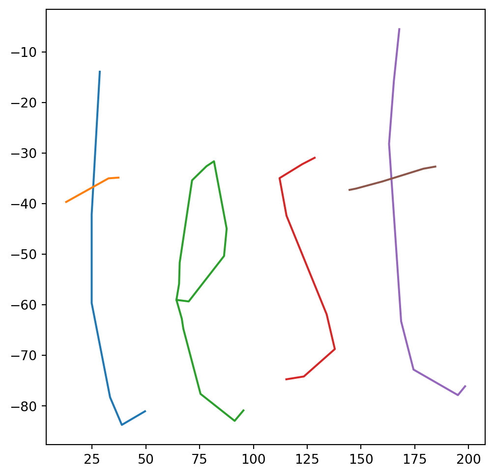

Cartography is an ancient and noble art. It has continued apace into the modern era. It seems clear that it will be a useful tool in my kit, both regarding my career as well as my hobbies, and there are many fun everyday applications of it, so I am finally diving in to studying it in a little more detail.
# Convert the text to a pathimport svgpathtoolspaths = svgpathtools.svg2paths('/h/Pictures/test2.svg')[0]# Convert the path to a list of pointsimport numpy as npdef path_to_points(path, n=100): points = []for line in path:ifisinstance(line, svgpathtools.Line): x = np.linspace(line.start.real, line.end.real, 10) y = np.linspace(line.start.imag, line.end.imag, 10) points.extend(list(zip(x, y)))elifisinstance(line, svgpathtools.CubicBezier): x = np.linspace(line.start.real, line.end.real, 10) y = np.linspace(line.start.imag, line.end.imag, 10) points.extend(list(zip(x, y)))else:raiseValueError('Unknown line type: {}'.format(line))return pointspoints = []for path in paths: points.append(path_to_points(path))# Flip the y axispoints = [[(x, -y) for x, y in path] for path in points]# Display the pointsimport matplotlib.pyplot as pltplt.figure(figsize=(6, 6))for path in points: x, y =zip(*path) plt.plot(x, y)plt.show()

So, now I’m just going to draw a simple image in Inkscape, and then convert it to a list of points. I can later figure out how to generate my svg properly (the trick to converting an SVG with text to an set of lines is not jumping out at me).
Code
# Center the x and y coordinates on Prague, and stretch them to the correct sizeprague = (14.4378, 50.0755)# Width is 500mtarget_width =2000# Get the ratio of the width and height of the pointswidth =max(x for path in points for x, y in path) -min(x for path in points for x, y in path)height =max(y for path in points for x, y in path) -min(y for path in points for x, y in path)ratio = width / height# Meters to degreesmeters_to_degrees =1/111111# Degree rangedegree_width = target_width * meters_to_degrees# Height is proportional to the widthdegree_height = degree_width / ratio# Center the pointscenter_x = (max(x for path in points for x, y in path) +min(x for path in points for x, y in path)) /2center_y = (max(y for path in points for x, y in path) +min(y for path in points for x, y in path)) /2points = [[(x - center_x, y - center_y) for x, y in path] for path in points]# Scale the pointspoints = [[(x * degree_width / width, y * degree_height / height) for x, y in path] for path in points]# Move the points to Praguepoints = [[(x + prague[0], y + prague[1]) for x, y in path] for path in points]# Convert the points to a list of geometry objectsimport shapely.geometrypoints = [[shapely.geometry.Point(x, y) for x, y in path] for path in points]# Create a list of path objectsgeom_paths = [shapely.geometry.LineString(path) for path in points]# Display the GeoJSONimport foliumm = folium.Map(location=[prague[1], prague[0]], zoom_start=15)for path in points: folium.PolyLine([(p.y, p.x) for p in path]).add_to(m)m
Make this Notebook Trusted to load map: File -> Trust Notebook
Okay that worked and is looking a lot more like what I want. Now I just need to figure out how to snap the vectors to roads.
Snap to Roads
Code
# Get the bounding box of the pointsmin_x =min(p.x for path in points for p in path)max_x =max(p.x for path in points for p in path)min_y =min(p.y for path in points for p in path)max_y =max(p.y for path in points for p in path)# Get the highways, streets, and footwaysimport overpyapi = overpy.Overpass()result = api.query(f"""( way["highway"="residential"]({min_y}, {min_x}, {max_y}, {max_x}); way["highway"="primary"]({min_y}, {min_x}, {max_y}, {max_x}); way["highway"="tertiary"]({min_y}, {min_x}, {max_y}, {max_x}); way["highway"="footway"]({min_y}, {min_x}, {max_y}, {max_x}););(._;>;);out geom;""")roads = [shapely.geometry.LineString([(n.lon, n.lat) for n in w.nodes]) for w in result.ways]road_points = []for path in points: road_points.append([])for point in path:# Find the closest road closest_road =min(roads, key=lambda r: r.distance(point))# Find the closest point on the road closest_point = closest_road.interpolate(closest_road.project(point)) road_points[-1].append(closest_point)# Display the road_pointsimport foliumm = folium.Map(location=[prague[1], prague[0]], zoom_start=15)for path in road_points: folium.PolyLine([(p.y, p.x) for p in path]).add_to(m)m
Make this Notebook Trusted to load map: File -> Trust Notebook
Okay! That.. actually did work. In the sense that it did what I asked for. However I’m realising once again that perhaps what I asked for is not exactly what I wanted. Snapping the text to the nearest road is nice, doing so without asking me to run through buildings would be nicer.
Lets have one more attempt.
Snap to Roads (Attempt 2)
Code
# Use mapbox to snap the points to the roadsimport mapboximport osimport dotenvdotenv.load_dotenv()mapbox_token = os.environ['MAPBOX_TOKEN']# Use the map matching API to snap the points to the roadsfrom mapbox import MapMatchermm = MapMatcher(access_token=mapbox_token)# Create mapbox linestrings from shapely linestringsmapbox_linestrings = []def create_linestring(path):return {'type': 'Feature','properties': {},'geometry': {'type': 'LineString','coordinates': [(p.x, p.y) for p in path] } }for path in points:iflen(path) >100:for i inrange(0, len(path), 100): mapbox_linestrings.append(create_linestring(path[i:i+100]))else: mapbox_linestrings.append(create_linestring(path))responses = [mm.match(feature=linestring) for linestring in mapbox_linestrings]geometries = [response.geojson()['features'][0]['geometry'] for response in responses]# Display the pointsimport foliumm = folium.Map(location=[prague[1], prague[0]], zoom_start=15)for path in geometries: folium.PolyLine([(p[1], p[0]) for p in path['coordinates']]).add_to(m)m
Make this Notebook Trusted to load map: File -> Trust Notebook
Okay, thanks for that mapbox. Quite nice and abstract. Not really what I was looking for but hey, its something.
Source Code
---# Genericauthor: "Fergus Fettes"updated: todaydate-format: "MMM D, YYYY"title-block-banner: pinktitle-block-banner-color: white# date-format: isojupyter: python3toc: true # Table of Contentsreference-location: marginformat: html: code-tools: true code-fold: true citations-hover: true footnotes-hover: truefreeze: auto# Specifictitle: GIS Map Experimentsdate: 2022-10-30T11:37:33+01:00---# IntroductionCartography is an ancient and noble art. It has continued apace into the modern era. It seems clear that it will be a useful tool in my kit, both regarding my career as well as my hobbies, and there are many fun everyday applications of it, so I am finally diving in to studying it in a little more detail.[Main](/Projects/GIS.qmd)# Attempt 2 to make running routes from text## Convert Text to GPS Coords```{python}# Convert the text to a pathimport svgpathtoolspaths = svgpathtools.svg2paths('/h/Pictures/test2.svg')[0]# Convert the path to a list of pointsimport numpy as npdef path_to_points(path, n=100): points = []for line in path:ifisinstance(line, svgpathtools.Line): x = np.linspace(line.start.real, line.end.real, 10) y = np.linspace(line.start.imag, line.end.imag, 10) points.extend(list(zip(x, y)))elifisinstance(line, svgpathtools.CubicBezier): x = np.linspace(line.start.real, line.end.real, 10) y = np.linspace(line.start.imag, line.end.imag, 10) points.extend(list(zip(x, y)))else:raiseValueError('Unknown line type: {}'.format(line))return pointspoints = []for path in paths: points.append(path_to_points(path))# Flip the y axispoints = [[(x, -y) for x, y in path] for path in points]# Display the pointsimport matplotlib.pyplot as pltplt.figure(figsize=(6, 6))for path in points: x, y =zip(*path) plt.plot(x, y)plt.show()```So, now I'm just going to draw a simple image in Inkscape, and then convert it to a list of points. I can later figure out how to generate my svg properly (the trick to converting an SVG with text to an set of lines is not jumping out at me).```{python}# Center the x and y coordinates on Prague, and stretch them to the correct sizeprague = (14.4378, 50.0755)# Width is 500mtarget_width =2000# Get the ratio of the width and height of the pointswidth =max(x for path in points for x, y in path) -min(x for path in points for x, y in path)height =max(y for path in points for x, y in path) -min(y for path in points for x, y in path)ratio = width / height# Meters to degreesmeters_to_degrees =1/111111# Degree rangedegree_width = target_width * meters_to_degrees# Height is proportional to the widthdegree_height = degree_width / ratio# Center the pointscenter_x = (max(x for path in points for x, y in path) +min(x for path in points for x, y in path)) /2center_y = (max(y for path in points for x, y in path) +min(y for path in points for x, y in path)) /2points = [[(x - center_x, y - center_y) for x, y in path] for path in points]# Scale the pointspoints = [[(x * degree_width / width, y * degree_height / height) for x, y in path] for path in points]# Move the points to Praguepoints = [[(x + prague[0], y + prague[1]) for x, y in path] for path in points]# Convert the points to a list of geometry objectsimport shapely.geometrypoints = [[shapely.geometry.Point(x, y) for x, y in path] for path in points]# Create a list of path objectsgeom_paths = [shapely.geometry.LineString(path) for path in points]# Display the GeoJSONimport foliumm = folium.Map(location=[prague[1], prague[0]], zoom_start=15)for path in points: folium.PolyLine([(p.y, p.x) for p in path]).add_to(m)m```Okay that worked and is looking a lot more like what I want. Now I just need to figure out how to snap the vectors to roads.## Snap to Roads```{python}# Get the bounding box of the pointsmin_x =min(p.x for path in points for p in path)max_x =max(p.x for path in points for p in path)min_y =min(p.y for path in points for p in path)max_y =max(p.y for path in points for p in path)# Get the highways, streets, and footwaysimport overpyapi = overpy.Overpass()result = api.query(f"""( way["highway"="residential"]({min_y}, {min_x}, {max_y}, {max_x}); way["highway"="primary"]({min_y}, {min_x}, {max_y}, {max_x}); way["highway"="tertiary"]({min_y}, {min_x}, {max_y}, {max_x}); way["highway"="footway"]({min_y}, {min_x}, {max_y}, {max_x}););(._;>;);out geom;""")roads = [shapely.geometry.LineString([(n.lon, n.lat) for n in w.nodes]) for w in result.ways]road_points = []for path in points: road_points.append([])for point in path:# Find the closest road closest_road =min(roads, key=lambda r: r.distance(point))# Find the closest point on the road closest_point = closest_road.interpolate(closest_road.project(point)) road_points[-1].append(closest_point)# Display the road_pointsimport foliumm = folium.Map(location=[prague[1], prague[0]], zoom_start=15)for path in road_points: folium.PolyLine([(p.y, p.x) for p in path]).add_to(m)m```Okay! That.. actually did work. In the sense that it did what I asked for. However I'm realising once again that perhaps what I asked for is not exactly what I wanted. Snapping the text to the nearest road is nice, doing so without asking me to run through buildings would be nicer.Lets have one more attempt.## Snap to Roads (Attempt 2)```{python}# Use mapbox to snap the points to the roadsimport mapboximport osimport dotenvdotenv.load_dotenv()mapbox_token = os.environ['MAPBOX_TOKEN']# Use the map matching API to snap the points to the roadsfrom mapbox import MapMatchermm = MapMatcher(access_token=mapbox_token)# Create mapbox linestrings from shapely linestringsmapbox_linestrings = []def create_linestring(path):return {'type': 'Feature','properties': {},'geometry': {'type': 'LineString','coordinates': [(p.x, p.y) for p in path] } }for path in points:iflen(path) >100:for i inrange(0, len(path), 100): mapbox_linestrings.append(create_linestring(path[i:i+100]))else: mapbox_linestrings.append(create_linestring(path))responses = [mm.match(feature=linestring) for linestring in mapbox_linestrings]geometries = [response.geojson()['features'][0]['geometry'] for response in responses]# Display the pointsimport foliumm = folium.Map(location=[prague[1], prague[0]], zoom_start=15)for path in geometries: folium.PolyLine([(p[1], p[0]) for p in path['coordinates']]).add_to(m)m```Okay, thanks for that mapbox. Quite nice and abstract. Not really what I was looking for but hey, its something.